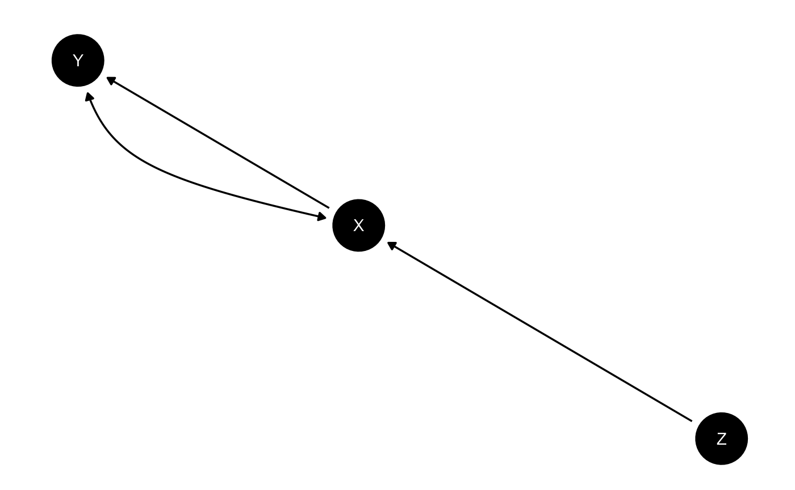

if(!requireNamespace("fabricatr", quietly = TRUE)) {
install.packages("fabricatr")
}
library(CausalQueries)
library(fabricatr)
library(knitr)Make a model
Generating: To make a model you need to provide a
DAG statement to make_model.
For instance
"X->Y"-
"X -> M -> Y <- X"or
-
"Z -> X -> Y <-> X".
# examples of models
xy_model <- make_model("X -> Y")
iv_model <- make_model("Z -> X -> Y <-> X")Graphing: Once you have made a model you can inspect the DAG:
plot(iv_model)
Inspecting: The model has a set of parameters and a default distribution over these.
| param_names | node | gen | param_set | nodal_type | given | param_value | priors |
|---|---|---|---|---|---|---|---|
| X.0 | X | 1 | X | 0 | 0.50 | 1 | |
| X.1 | X | 1 | X | 1 | 0.50 | 1 | |
| Y.00 | Y | 2 | Y | 00 | 0.25 | 1 | |
| Y.10 | Y | 2 | Y | 10 | 0.25 | 1 | |
| Y.01 | Y | 2 | Y | 01 | 0.25 | 1 | |
| Y.11 | Y | 2 | Y | 11 | 0.25 | 1 |
Tailoring: These features can be edited using
set_restrictions, set_priors and
set_parameters. Here is an example of setting a
monotonicity restriction (see ?set_restrictions for
more):
Here is an example of setting a monotonicity restriction (see
?set_restrictions for more):
iv_model <-
iv_model |> set_restrictions(decreasing('Z', 'X'))Here is an example of setting priors (see ?set_priors
for more):
iv_model <-
iv_model |> set_priors(distribution = "jeffreys")
#> No specific parameters to alter values for specified. Altering all parameters.Simulation: Data can be drawn from a model like this:
| Z | X | Y |
|---|---|---|
| 0 | 0 | 0 |
| 0 | 0 | 0 |
| 0 | 0 | 1 |
| 1 | 1 | 0 |
Model updating
Updating: Update using update_model.
You can pass all rstan arguments to
update_model.
df <- fabricatr::fabricate(N = 100, X = rbinom(N, 1, .5), Y = rbinom(N, 1, .25 + X*.5))
xy_model <-
xy_model |>
update_model(df, refresh = 0)Inspecting: You can access the posterior distribution on model parameters directly thus:
| X.0 | X.1 | Y.00 | Y.10 | Y.01 | Y.11 |
|---|---|---|---|---|---|
| 0.4821594 | 0.5178406 | 0.0471424 | 0.2632089 | 0.6432583 | 0.0463903 |
| 0.5071896 | 0.4928104 | 0.1281838 | 0.1701118 | 0.6120057 | 0.0896987 |
| 0.4689617 | 0.5310383 | 0.3111488 | 0.0606445 | 0.4624005 | 0.1658062 |
| 0.5044569 | 0.4955431 | 0.0941498 | 0.1148890 | 0.6515201 | 0.1394411 |
| 0.4473054 | 0.5526946 | 0.2532965 | 0.0067709 | 0.4865857 | 0.2533469 |
| 0.5101773 | 0.4898227 | 0.1613836 | 0.0996907 | 0.6024682 | 0.1364576 |
where each row is a draw of parameters.
Query model
Querying: You ask arbitrary causal queries of the model.
Examples of unconditional queries:
xy_model |>
query_model("Y[X=1] > Y[X=0]", using = c("priors", "posteriors")) |>
kable()| query | given | using | case_level | mean | sd | cred.low | cred.high |
|---|---|---|---|---|---|---|---|
| Y[X=1] > Y[X=0] | - | priors | FALSE | 0.2494120 | 0.1928620 | 0.0082392 | 0.7132312 |
| Y[X=1] > Y[X=0] | - | posteriors | FALSE | 0.5848385 | 0.0964459 | 0.3836626 | 0.7483120 |
Examples of conditional queries:
xy_model |>
query_model("Y[X=1] > Y[X=0]", using = c("priors", "posteriors"),
given = "X==1 & Y == 1") |>
kable()| query | given | using | case_level | mean | sd | cred.low | cred.high |
|---|---|---|---|---|---|---|---|
| Y[X=1] > Y[X=0] | X==1 & Y == 1 | priors | FALSE | 0.4964495 | 0.2907379 | 0.0220359 | 0.9767494 |
| Y[X=1] > Y[X=0] | X==1 & Y == 1 | posteriors | FALSE | 0.8070173 | 0.1149462 | 0.5700667 | 0.9878575 |
Queries can even be conditional on counterfactual quantities. Here the probability of a positive effect given some effect:
xy_model |>
query_model("Y[X=1] > Y[X=0]", using = c("priors", "posteriors"),
given = "Y[X=1] != Y[X=0]") |>
kable()| query | given | using | case_level | mean | sd | cred.low | cred.high |
|---|---|---|---|---|---|---|---|
| Y[X=1] > Y[X=0] | Y[X=1] != Y[X=0] | priors | FALSE | 0.5022034 | 0.2877115 | 0.0244702 | 0.9758123 |
| Y[X=1] > Y[X=0] | Y[X=1] != Y[X=0] | posteriors | FALSE | 0.8425530 | 0.0776924 | 0.7017016 | 0.9882414 |